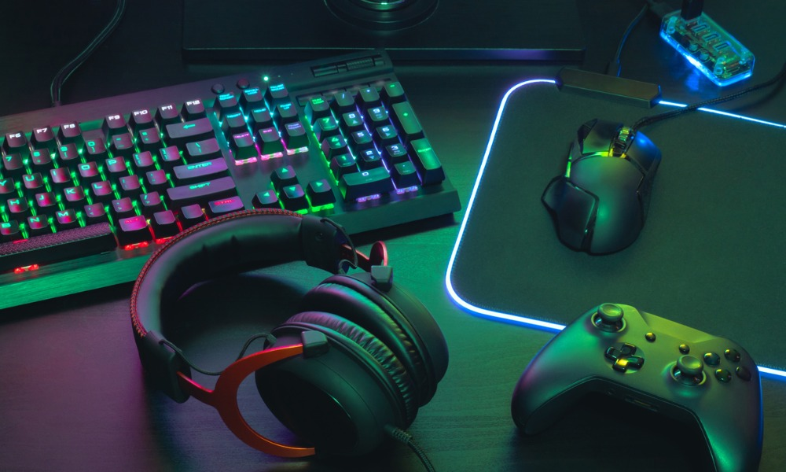

Өөрийнхөө хамгийн дуртай гурван хоббиныхоо тухай энд бичлээ.
1.Pc тоглоом 2.Хоол хийх урлаг 3.Гар бөмбөг


1.Хэдий дийлэнх хүмүүс пс тоглоомыг муу зүйл гэдэг боловч, нөгөө талаараа сайн талтай билээ. компьютерын анхан шатны мэдлэг, англи хэлээ ч сайжруулах боломж олгосон учир гэрийнхэн маань ч миний хоббиг хориж, хаадаггүй. Мэдээж хэдий хобби ч гэсэн тунг нь тааруулах хэрэгтэй.
2.Хоол гэдэг бол маш гайхалтай урлаг. Бид хоолгүйгээр амьдарч чадахгүйн зэрэгцээ, амттай хоолноос аз жаргалыг мэдэрч чаддаг. Тийм ч учир ихэвчлэн гэрийнхээ хоолыг би өөрөө хийдэг болохоор үргэлж шинэ хоол туршиж амттай хоолоороо бусад хүмүүст сайхан сэтгэгдэл төрүүлэхийг хүсдэг.
3.Хамгийн анх сагсан бөмбөгт дуртай байлаа. Тэгээд мөргүүлээд нүдэндээ гэмтэл авч байсан болохоор илүү аюулгүй спорт учир гар бөмбөг тоглодог болсон. Яваандаа энэ спортод үнэхээр дуртай болж, зав чөлөөгөөрөө зааланд байнга тоглодог хобби минь болсон.